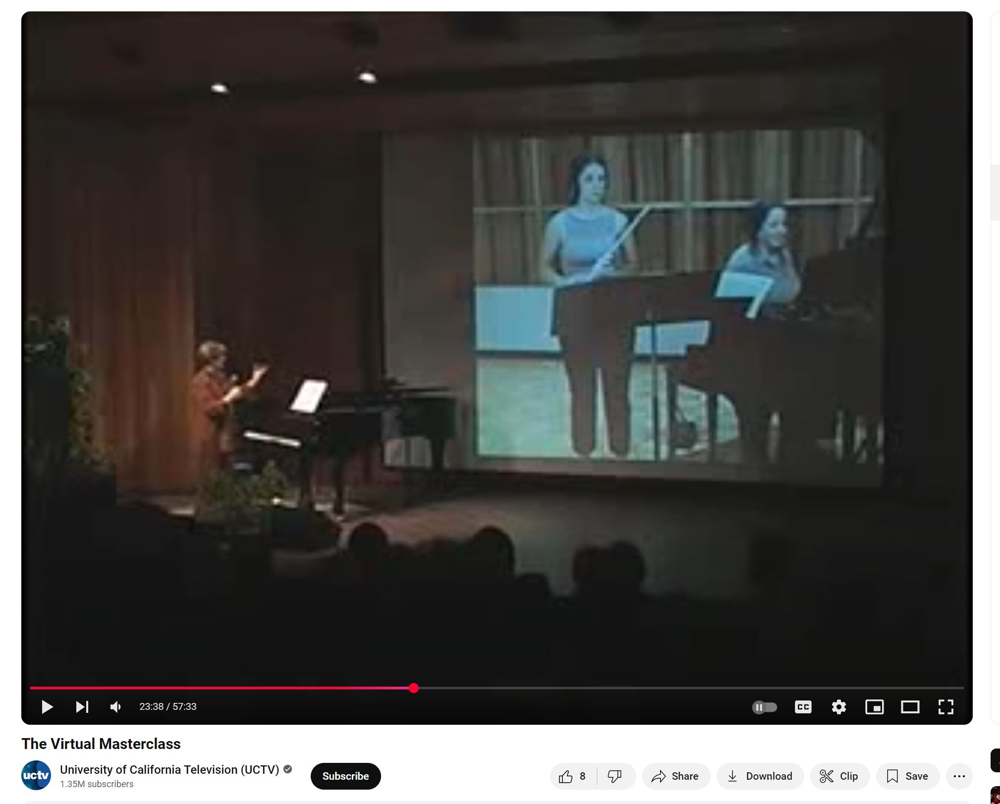
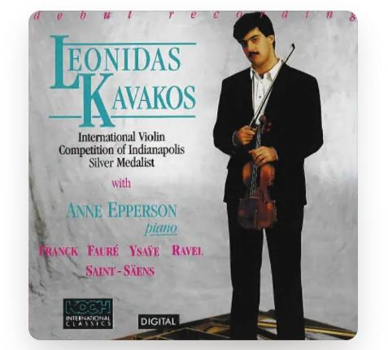

Interview - Anne Epperson
Excerpt from an online interview from 17 October 2024 with Chanda VanderHart.
Audio Files - Epperson Students and Colleagues
Excerpts from 6 online interviews with Michael Bunchman, Jacob Coleman, Chuck Dillard, Warren Jones, Tomoko Kashiwagi, and Margaret McDonald in 2024.
Virtual Masterclass, UCSB 2003
Masterclass between UCSB and Santa Barbara City College in 2003 that was one of the first virtual coaching experiments.

Leonidas Kavakos Debut Recording (1990)
Available on Apple Music.

Program collection: Cleveland Institute of Music
CIM concerts featuring Epperson between 1987 and 1995.
Program collection: Cleveland Institute of Music, Part II.
CIM concerts featuring Epperson between 1986 and 1987.